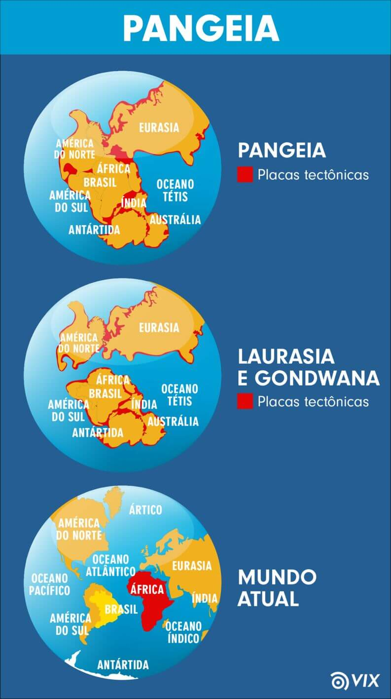

O Período Jurássico corresponde ao segundo período da Era Mesozoica (entre 205 a 142 milhões de anos atrás) sendo suas principais características o início da fragmentação da Pangeia e o surgimento dos dinossauros.
Ademais, foi nesse período que surgem as reservas de petróleo, decorrente do acúmulo de sedimentos.
https://bit.ly/2lEMg23
Vale lembrar que a Pangeia correspondia a uma grande massa sólida que formava um único continente no planeta, e durante o período jurássico, ela é dividida em dois blocos:
A Laurasia (que atualmente corresponde à América do Norte, Europa e Ásia), ao norte, e a Gondwana (hoje os territórios da América do Sul, África, Antártica, Austrália e Índia), ao sul.
Observe que a configuração dos continentes no planeta Terra, tal qual conhecemos hoje, durou cerca de 100 milhões de anos para se formar.

https://bit.ly/2lydWpq
De tal modo, durante o período jurássico, a elevação dos níveis de águas dos oceanos adentrou os continentes, permitindo assim, o desenvolvimento da vegetação (florestas, coníferas, gimnospermas e algumas angiospermas), dos mares intra continentais e, consequentemente, dos animais (peixes, anfíbios, aves, répteis, insetos e pequenos mamíferos marsupiais), dos quais se destacam os dinossauros.
Por sua vez, o termo “jurássico” deriva do nome “Jura”, cadeia de montanhas localizada entre a Suíça, França e Alemanha.
Seu nome surgiu na medida em que essas montanhas se formaram durante o período jurássico, a partir do acúmulo de sedimentos depositados durante anos.
Os dinossauros, répteis gigantescos que viviam na água, no ar e na terra, foram os animais mais representativos desse período, sobretudo dos dinossauros carnívoros.
https://bit.ly/2lEuGew
Os dinossauros que viviam na água representavam o grupo dos plesiossauros, e os que possuíam asas, ou seja, viviam no ar, eram chamados de pterossauros.
Há diversos tipos de dinossauros, dos quais se destacam os predadores carnívoros Tiranossauro e Dilofossauro e os herbívoros Diplodoco e Ultrassauro.
https://bit.ly/2ksnBh5
Esses gigantescos répteis foram extintos do planeta pois, segundo pesquisas, em 65,5 milhões de anos atrás, no final do período cretáceo, um enorme meteoro atingiu a Terra, dizimando toda a população de dinossauros. Sabemos de sua existência pelos estudos dos fósseis encontrados, e atualmente, expostos em diversos museus do mundo.